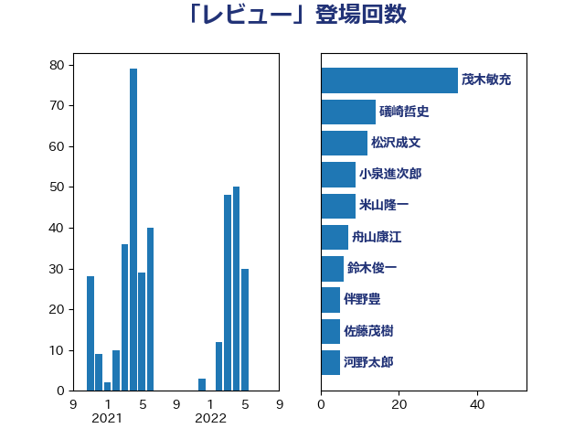

単語「レビュー」

| 茂木敏充 | 自由民主党 | 35 回 |
| 礒崎哲史 | 国民民主党 | 14 回 |
| 松沢成文 | 日本維新の会 | 12 回 |
| 小泉進次郎 | 自由民主党 | 9 回 |
| 米山隆一 | 立憲民主党 | 9 回 |
| 舟山康江 | 国民民主党 | 7 回 |
| 鈴木俊一 | 自由民主党 | 6 回 |
| 伴野豊 | 立憲民主党 | 5 回 |
| 佐藤茂樹 | 公明党 | 5 回 |
| 河野太郎 | 自由民主党 | 5 回 |
| 笠井亮 | 日本共産党 | 5 回 |
| 伊波洋一 | 無所属 | 4 回 |
| 古川俊治 | 自由民主党 | 4 回 |
| 安江伸夫 | 公明党 | 4 回 |
| 山下芳生 | 日本共産党 | 4 回 |
| 牧島かれん | 自由民主党 | 4 回 |
| 阿部知子 | 立憲民主党 | 4 回 |
| 麻生太郎 | 自由民主党 | 4 回 |
| 井林辰憲 | 自由民主党 | 3 回 |
| 岸信夫 | 自由民主党 | 3 回 |
| 岸田文雄 | 自由民主党 | 3 回 |
| 梶山弘志 | 自由民主党 | 3 回 |
| 横山信一 | 公明党 | 3 回 |
| 浅田均 | 日本維新の会 | 3 回 |
| 石井正弘 | 自由民主党 | 3 回 |
| 若松謙維 | 公明党 | 3 回 |
| 若林健太 | 自由民主党 | 3 回 |
| 須藤元気 | 無所属 | 3 回 |
| 鷲尾英一郎 | 自由民主党 | 3 回 |
| 伊佐進一 | 公明党 | 2 回 |
| 古賀之士 | 立憲民主党 | 2 回 |
| 室井邦彦 | 日本維新の会 | 2 回 |
| 山崎誠 | 立憲民主党 | 2 回 |
| 川田龍平 | 立憲民主党 | 2 回 |
| 柴田巧 | 日本維新の会 | 2 回 |
| 沢田良 | 日本維新の会 | 2 回 |
| 浅野哲 | 国民民主党 | 2 回 |
| 浜地雅一 | 公明党 | 2 回 |
| 福島みずほ | 社会民主党 | 2 回 |
| 西銘恒三郎 | 自由民主党 | 2 回 |
| 角田秀穂 | 公明党 | 2 回 |
| 谷合正明 | 公明党 | 2 回 |
| 野田国義 | 立憲民主党 | 2 回 |
| 青山周平 | 自由民主党 | 2 回 |
| 高橋光男 | 公明党 | 2 回 |
| 高野光二郎 | 自由民主党 | 2 回 |
| 鬼木誠 | 立憲民主党 | 2 回 |
| 井上信治 | 自由民主党 | 1 回 |
| 井上哲士 | 日本共産党 | 1 回 |
| 今井絵理子 | 自由民主党 | 1 回 |
| 務台俊介 | 自由民主党 | 1 回 |
| 土屋品子 | 自由民主党 | 1 回 |
| 宮本岳志 | 日本共産党 | 1 回 |
| 小林史明 | 自由民主党 | 1 回 |
| 小林鷹之 | 自由民主党 | 1 回 |
| 小森卓郎 | 自由民主党 | 1 回 |
| 小沼巧 | 立憲民主党 | 1 回 |
| 小野泰輔 | 日本維新の会 | 1 回 |
| 山井和則 | 立憲民主党 | 1 回 |
| 山本博司 | 公明党 | 1 回 |
| 平井卓也 | 自由民主党 | 1 回 |
| 平木大作 | 公明党 | 1 回 |
| 庄子賢一 | 公明党 | 1 回 |
| 後藤茂之 | 自由民主党 | 1 回 |
| 末松信介 | 自由民主党 | 1 回 |
| 本田太郎 | 自由民主党 | 1 回 |
| 杉久武 | 公明党 | 1 回 |
| 梅村聡 | 日本維新の会 | 1 回 |
| 橋本聖子 | 無所属 | 1 回 |
| 江島潔 | 自由民主党 | 1 回 |
| 浜田聡 | NHK党 | 1 回 |
| 清水真人 | 自由民主党 | 1 回 |
| 田名部匡代 | 立憲民主党 | 1 回 |
| 田村智子 | 日本共産党 | 1 回 |
| 稲富修二 | 立憲民主党 | 1 回 |
| 竹谷とし子 | 公明党 | 1 回 |
| 細田健一 | 自由民主党 | 1 回 |
| 自見はなこ | 自由民主党 | 1 回 |
| 舞立昇治 | 自由民主党 | 1 回 |
| 藤井比早之 | 自由民主党 | 1 回 |
| 重徳和彦 | 立憲民主党 | 1 回 |
| 金子恭之 | 自由民主党 | 1 回 |
| 青木愛 | 立憲民主党 | 1 回 |
| 高橋千鶴子 | 日本共産党 | 1 回 |